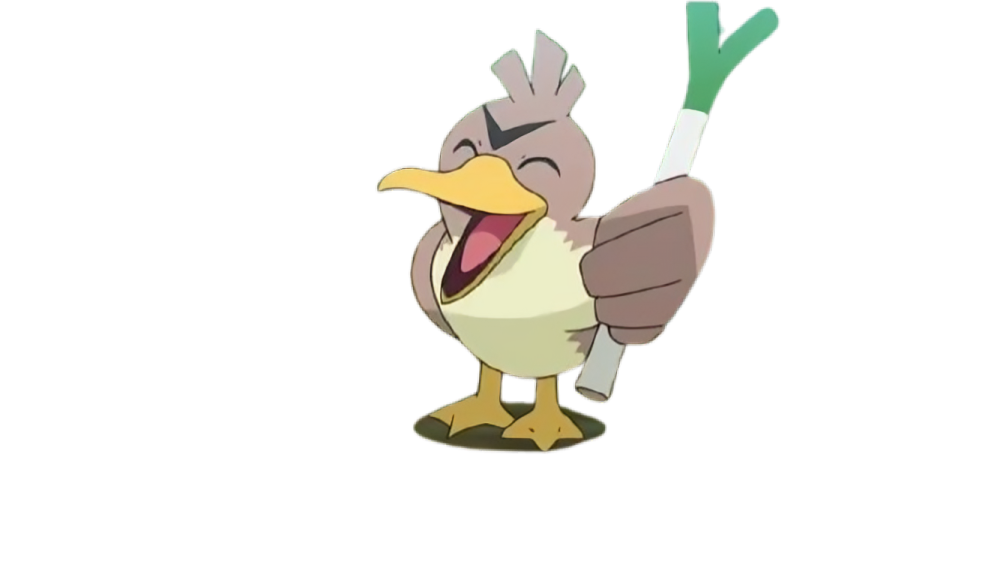

The Laughter Lens
A data-driven exploration of humor across institutional (The New Yorker) and general (Oxford) contexts.

The New Yorker, a prestigious magazine known for its witty and thought-provoking content, is on the hunt for a new editorialist. The HR director looks at you and says, "We’re looking for someone who truly understands humor, someone who can make our readers laugh, think, and come back for more." But here’s the catch: Humor is subjective. What makes one person laugh might leave another scratching their head. To prove you’re the right candidate, you’ll need to demonstrate your comedic instincts and align with the humor profile of our readers.
Fortunately, the amazing ADArticho team thoroughly analyzed the New Yorker Caption Contest dataset and the Oxford Humor in Context dataset to uncover what makes a joke funny, how humor evolves over time, and which themes resonate most with readers. Now, it's time to leverage these insights and test your comedic prowess.
But before diving into the data and quizzes, let's understand the New Yorker and Oxford datasets a bit more. Feel free to explore the details of our datasets on the Datasets Page! From this, our team started with three major questions about humor:
What aspects of their lives do people denounce or joke about most often? Which themes and types of humor recur most frequently in humorous captions?
Do the successful captions in the New Yorker dataset exhibit cultural or thematic biases that differ from those in the Oxford dataset?
How do the thematic structures of humor evolve over time, and can major sociopolitical or cultural events be linked to shifts in the popularity of humor themes?
These questions guided our exploration of humor across different contexts, cultures, and time periods. Now, let’s try answering these big questions through the following analyses.
The New Yorker Caption Contest dataset (NYCC) and Oxford Humor in Context dataset (OHIC) provide a unique opportunity to explore humor through data. Both datasets compile images and captions rated by humans for their funniness, offering insights into humor across institutional and general contexts.
This dataset focuses on cartoons and contains detailed metadata for each image/contest. Learn more on the New Yorker Caption Contest Website.
This dataset focuses on internet memes and is less detailed than NYCC but still contains the most important information for our project. Learn more in the OHIC Research Paper.
While OHIC has fewer metadata fields, it complements NYCC by providing a broader perspective on humor in internet culture. Together, these datasets allow us to analyze humor across different formats and contexts.
We implemented helper functions to load captions in a nearly uniform format between the two datasets, ensuring consistency and removing lines with missing values. Now, let’s dive into the data and uncover what makes humor tick!
Our analysis revealed key insights into the datasets, focusing on the distribution of captions, voting patterns, and the relationship between caption rank and funniness scores. Below, we highlight three key visualizations, while also summarizing other analyses conducted during this study.
In the NYCC dataset, 80% of images have between 4,000 and 8,000 captions, with outliers ranging from 1,066 to 15,329 captions. In contrast, the OHIC dataset shows a power-law distribution, where a few images have many captions (up to 70,000), but 80% of images have only around 20 captions.
The distribution of votes across humor categories reveals that "Not Funny" dominates, especially in the mid-range (50–150 votes). "Somewhat Funny" peaks at lower vote counts (10–40), while "Funny" is heavily concentrated near 0–10 votes. This reflects the subjective nature of humor and the difficulty of creating universally appealing captions.
Captions with the best ranks (1–10) have distinctly higher mean funniness scores, averaging around 1.9. Beyond rank 10, the scores drop sharply and stabilize near the minimum. Captions that stand out tend to receive higher funniness scores, but the majority remain at the lower end of the scale, most low-ranked captions are uniformly mediocre.
Then, we observe that humor is highly subjective, with most captions receiving low funniness scores. Captions with higher visibility tend to attract more votes across all categories, highlighting the role of exposure in voting dynamics. The NYCC dataset shows more balanced engagement due to its structured contests, while OHIC's meme-based content results in greater variability and imbalanced participation. These findings underscore the challenges of analyzing humor quantitatively and the importance of considering context and audience dynamics.
Our analysis shows that shorter captions tend to be funnier. The most frequent caption length is around 8 words, representing concise, one-sentence jokes. Longer captions, while occasionally effective, often lose their punch and are less likely to be rated as funny.
The distribution of caption lengths is right-skewed, with most captions being short. The most frequent length is around 8 words, while very few captions exceed 20 words. This suggests that brevity is a hallmark of humor, as punchy, economical language tends to dominate.
Our scatterplot analysis, which focuses on captions below 50 words, revealed a weak negative trend: as captions get longer, their average funniness tends to decrease slightly. Shorter captions (under 20 words) are generally rated as funnier, as concise, punchy humor tends to perform better. This trend suggests that brevity might play a role in crafting more effective jokes, though the relationship is not very strong.
Winning captions attract significantly more votes than average captions. This is a striking contrast to the average caption, which receives far fewer votes. Despite their success, winning captions can still polarize readers. They often receive a mix of positive and negative votes, showing that even the most popular captions do not appeal to everyone.
Winning captions dominate the voting landscape, gathering around 100 times more votes than the average caption. This dominance is evident in the log-scale plot, where winning captions consistently attract a significant share of total votes. On average, they concentrate around 1% of all votes, highlighting their ability to capture the audience's attention and engagement.
Our analysis revealed a clear correlation between the number of votes in each category ("Funny," "Somewhat Funny," "Not Funny") for winning captions. This indicates that winning captions tend to attract attention across all voting categories, further emphasizing their polarizing nature. Even the most popular captions evoke mixed reactions, reflecting the subjective nature of humor.
Interestingly, even winning captions, while receiving the highest scores, still show variability in their funniness ratings. This highlights the subjective nature of humor perception, where even the most popular captions do not appeal to everyone.
Humor is deeply subjective, and its classification presents unique challenges. To address this, we categorized captions into six predefined humor types: Affiliative, Sexual, Offensive, Irony/Satire, Absurdist, and Dark. These categories were chosen to reduce ambiguity, ensure clear distinctions, and make the classification process manageable.
The Challenge of Subjectivity and Overlap: Humor styles often overlap, and jokes can fit into multiple categories simultaneously. For example, a caption might be both Dark and Ironic. To address this, we constrained the classification to six clear types, ensuring consistency and interpretability.
The Role of Context: Context plays a critical role in humor interpretation. Without visual or situational context, even advanced models struggle to classify certain captions accurately. For instance, the phrase "That's nice of you to arrest me" requires visual context to confirm its ironic intent.
The confusion matrix compares the auto-labeler's predictions with human-labeled data. The model achieved an impressive 98.6% accuracy, with high precision in categories like Sexual and Offensive humor. Minor misclassifications occurred in overlapping categories, such as Affiliative vs. Dark humor.
Humor Type Distributions
Radar Chart: Humor Type Proportions
The analysis of humor types reveals distinct patterns between the datasets, reflecting their unique contexts and audiences:
These differences highlight the contrasting humor strategies of the two datasets. NYCC humor leans toward intellectual subtext, often requiring readers to interpret subtle cues and layered meanings. In contrast, Oxford humor is more direct and emotionally engaging, relying on relatability and shared cultural experiences to connect with its audience. This divergence underscores the influence of context and audience on the thematic and stylistic choices in humor.
Overall, our analysis demonstrates the distinct humor profiles of NYCC and Oxford datasets. NYCC humor relies on subtlety and intellectual engagement, while Oxford humor emphasizes relatability and directness. These findings underscore the importance of context, audience, and cultural factors in shaping humor styles.
We classified captions into predefined topics (e.g., Love, Family, School, Work, Politics and Social Issues, Nature, Food, Emotions, Entertainment and Pop Culture, Caption Contest, Health, Law, Other) to explore the thematic dimensions of humor in the datasets.
We used a sentence embedding approach to classify captions into topics. For a detailed explanation of the classification process, see the Models & Methods: Topic Classification section.
We also created an interactive pie chart to visualize the topic distributions in both datasets. You can explore it below:
This figure compares the normalized topic distributions of captions from NYCC and OHIC. While both datasets cover a similar range of themes, clear differences emerge in their relative emphasis across topics.
NYCC captions show a stronger concentration in Food, Work, Nature, and Health. Food is the most prominent topic, reflecting shared cultural experiences around eating, while Work and Nature highlight professional life and environmental humor.
In contrast, OHIC captions are dominated by Caption Contest, reflecting its self-referential and meme-driven nature. OHIC also emphasizes School, Emotions, Entertainment and Pop Culture, Law, and Love, showcasing a more expressive and pop-culture-oriented humor style.
Politics and Social Issues are limited in both datasets but slightly more represented in OHIC. These differences highlight contrasting humor strategies: NYCC favors situational and observational humor, while OHIC leans toward self-referential and emotionally expressive humor. A limitation of this analysis is that the content of the images, which could heavily influence caption themes, is not considered.
This figure shows the distribution of funny scores across topics for both NYCC and OHIC captions. While the distributions reveal substantial overlap, humor appreciation is influenced more by caption quality, phrasing, and context than by topic alone.
For most topics, including Food, Entertainment and Pop Culture, Caption Contest, and Law, NYCC and OHIC captions achieve similar median funny scores, indicating comparable humorous effectiveness. However, Politics and Social Issues is the only topic where OHIC captions outperform NYCC, likely due to a more direct engagement with contemporary political content. In contrast, NYCC captions score higher for topics like Love, Family, School, Nature, and Health, suggesting more consistent humor in these themes.
The high variance in funny scores across all topics, as shown by wide interquartile ranges and long whiskers, highlights that humor effectiveness depends on execution rather than thematic category. The Other category, as expected, shows the widest and most uneven distribution due to its heterogeneous nature.
Overall, the topic classification highlights the diverse thematic dimensions of humor in the datasets. Relational topics like Love and Family resonate broadly with audiences, with NYCC captions achieving higher funniness scores in these themes. Institutional topics like Health and Law provide humor rooted in societal critique, with both datasets showing comparable effectiveness in Law. The prominence of topics like Nature in NYCC reflects its focus on observational humor, while the higher representation of Politics and Social Issues in OHIC highlights its engagement with contemporary political content. These findings underscore the role of context, stylistic choices, and audience preferences in shaping the thematic content and reception of humor.
Word clouds reveal the most frequent words associated with each humor type and topic, providing a quick overview of recurring themes in the datasets. These visualizations help identify the dominant vocabulary and recurring patterns in captions.
For humor types, the word clouds highlight the distinct vocabulary used in different styles of humor, reflecting the unique contexts and audiences of the NYCC and OHIC datasets:
This analysis highlights the contrasting humor strategies of the two datasets. NYCC humor often relies on subtlety, cultural critique, and layered meanings, while OHIC humor is more direct, internet-centric, and emotionally charged. These differences underscore the influence of context and audience on the vocabulary and themes used in humor.
For topics, the word clouds illustrate the thematic focus of captions:

NYCC Caption Dataset:
OHIC Caption Dataset:
Our stylistic analysis focused on three key aspects of the captions: word length distributions, formality scores, and part-of-speech distributions. These metrics provide insights into the linguistic characteristics of captions in the NYCC and OHIC datasets, highlighting differences in tone, structure, and word usage.
The word length distributions reveal that NYCC captions are more concentrated in length, particularly for the most highly ranked captions, while OHIC captions show a broader distribution. Interestingly, longer captions are more represented among the funniest captions in the OHIC dataset, suggesting a preference for more elaborate humor.
The part-of-speech distributions highlight differences in word usage between the two datasets. NYCC captions feature a higher density of nouns, adjectives, and verbs, reflecting a more descriptive and action-oriented style. OHIC captions, on the other hand, show a higher density of interjections and unknown words, indicative of a more casual and expressive tone. The higher proportion of interjections in OHIC aligns with its internet-based context, where captions often rely on exaggerated expressions and slang.
The formality score distributions reveal distinct patterns between the two datasets. Captions in the NYCC dataset tend to have higher formality scores, with a peak in the mid-range, reflecting a balance between conversational and formal tones. In contrast, captions in the OHIC dataset exhibit a broader distribution, with a higher density of lower formality scores, indicating a more casual and internet-driven tone. This difference aligns with the institutional context of NYCC and the internet-based, meme-driven nature of OHIC.
Notably, the mean formality for NYCC captions is slightly higher than that of a US president speech, while the mean formality for OHIC captions is comparable to one, right above that of a script from "The Simpsons". Additionally, the formality scores for OHIC captions show higher variability compared to NYCC, reflecting a broader range of tones in the OHIC dataset. However, both datasets exhibit much lower formality than a typical New Yorker article.
These stylistic differences underscore the influence of context and audience on the linguistic characteristics of captions. While NYCC captions balance formality and descriptive language to appeal to a broader audience, OHIC captions embrace a more casual and expressive style, resonating with internet culture.
The evolution of humor topics in the New Yorker captions reveals significant trends over time, reflecting societal events and cultural shifts. By analyzing the proportions of topics across years, we can observe how external factors influence the thematic focus of captions.
This figure shows the yearly proportions of humor types in NYCC captions. The shift in humor styles reveals how the public adapted to the "shared challenges" of the last decade:
This figure presents a line plot of normalized topic distributions in NYCC captions over time. It highlight the dominance of certain themes, such as Food and Caption Contest, which consistently maintain high proportions across the years. These topics reflect universal and timeless themes that resonate broadly with audiences. Other topics, such as Love, Family, and Nature, remain steady over time, with occasional spikes reflecting specific cultural or societal moments.
This figure presents a heatmap of the standardized variation (z-scores) of topic proportions in NYCC captions over time. Deviations from the mean highlight periods during which certain themes became unusually prominent or marginal, often aligning with major social, political, and global events.
The heatmap reveals several notable trends:
Overall, these analyses demonstrate how external events and societal changes shape the thematic focus of humor over time. By examining these trends, we gain insights into the dynamic interplay between cultural context and humor.
The New Yorker Caption Contest dataset (NYCC) and Oxford Humor in Context dataset (OHIC) share similar humor distributions, but they differ in context, audience preferences, and humor styles. Below is a comparison of the two datasets:
| NYCC | OHIC | |
|---|---|---|
| Context | Institutional humor, focused on cartoons and structured contests. | Internet culture, focused on memes and pop culture. |
| Audience | Niche, sophisticated audience with a preference for subtle, intellectual humor. | Broader, younger, internet-savvy audience with a preference for relatable and expressive humor. |
| Humor Style | Subtle, clever wordplay, and observational humor. | Direct, absurd, and emotionally expressive humor. |
| Structure | Highly structured, with detailed metadata (e.g., votes, captions, image descriptions). | Less structured, with fewer metadata fields but broader coverage of internet humor. |
| Engagement | Balanced engagement across contests, with most images receiving a moderate number of captions. | Highly uneven engagement, with a few images dominating in captions and votes. |
| Caption Length | Shorter captions (~8 words) perform better, emphasizing brevity and punchiness. | Shorter captions also perform better, though longer captions can succeed with elaborate humor. |
| Stylistic Features | Higher formality, descriptive language, and balanced tone. | Casual, expressive tone with a higher density of interjections and slang. |
| Topic Focus | Dominated by universal themes like Food, Work, and Nature. | Dominated by internet-driven themes like Caption Contest, Entertainment, and Emotions. |
| Temporal Trends | Peaks in Irony/Satire (2016–2019) and Affiliative humor (2020–2024). | Increased focus on Politics and Pop Culture during societal shifts. |
| Humor Distribution | Follows a power-law distribution, with a small subset of captions dominating funniness scores. | Also follows a power-law distribution, with a few captions dominating the "Funny" category. |
This comparison highlights how context influences humor preferences. NYCC leans toward structured, institutional humor, appealing to a niche audience, while OHIC embraces the dynamic, fast-paced nature of internet culture, resonating with a broader audience.
Dive deeper into our datasets, methods, and findings: